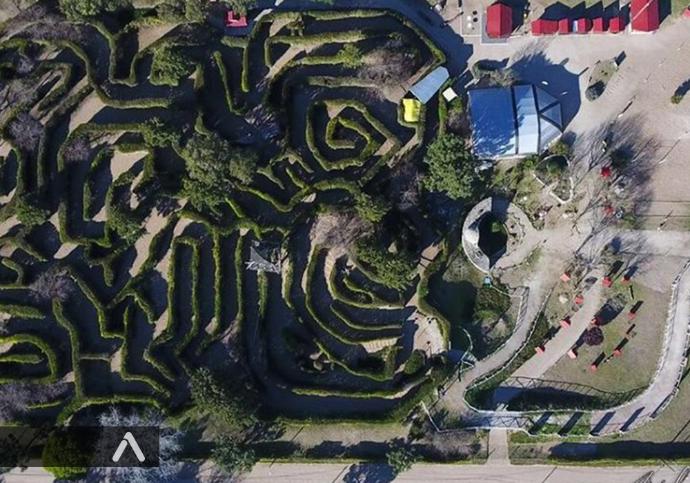
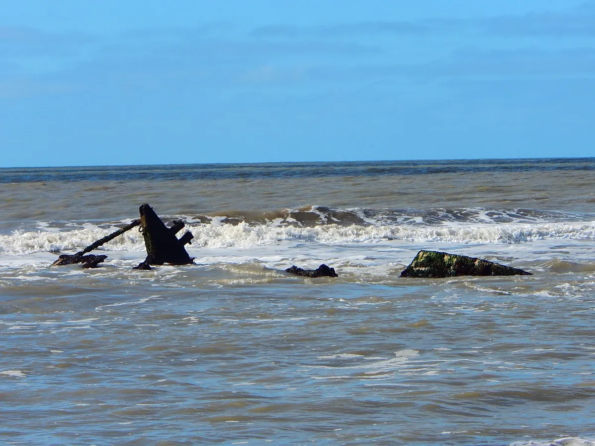

Con un origen común a las localidades que la anteceden, fue en terrenos de la familia Leloir que empezaron a transitar su propia historia.
Un primer hotel denominado Santa Ana abrió sus puertas a los turistas que llegaban desde la Capital. A partir de ese momento comienzan a gestarse las primeras construcciones: el primer almacén de ramos generales que más tarde daría lugar a una fábrica de alfajores.

Emplazado en una superficie de 10.000 m², si bien su mayor atracción es el Laberinto de ceto vivo, también cuenta con opciones interesantes como el Circuito Aeróbico, Juegos para chicos, Marco del amor y más: Cementerio de Caracoles, Puente sobre el Lago, Casa del Fantasma, Vía Crucis, Gruta de San Cayetano y Caverna Mariana, Mirador, Árbol de 3 troncos y el famoso Laberinto.

Her Royal Highness fue el nombre de un barco de bandera inglesa, construido en Canadá y que naufragó frente a las costas de las Toninas en el año 1883. Actualmente, cuando la marea baja pueden observarse los restos del navío.
Muchas leyendas se generaron alrededor de esta embarcación, cuyo capitán al mando Griffith George y su segundo Mark Williams, fueron juzgados por un Tribunal Naval y suspendidas sus matrículas para navegar. Este suceso propició que muchos de los sobrevivientes se radicaran en esta zona.lificadas por la presencia de cloruros, sulfatos, hierro,calcio, magnesio y sodio. Poseen tres veces más sales que el agua de mar, su Ph ácido las hace ideales en el tratamiento de afecciones de la piel y mucosas.